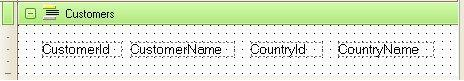
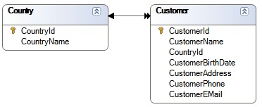

Throughout any application it is necessary to retrieve information from the database in a procedural way. Whether procedures (the Source), events of Web, Work or Smart Devices Panels, events of Work With for Smart Devices object objects, or subroutines (all places where procedural code is expected.). For this, GeneXus has the For each command. Used to get a dataset from the database, when used in procedures, besides reading the database, it can also be used in order to update it. Within a For Each command we define the information we want to read (also write if inside a Procedure object) by specifying the Transaction Level from which we want to retrieve information, and the name of the attributes we want to use. The transaction level is known as Base Trn. ExampleWe want to display some information about our customers, so we design the following Procedure:
For each Customer
Print Customers
Endfor
"Customer" is the name of the Transaction (remember the first level of a transaction receives the name of the Transaction itself). "Customers" is the name of the following printBlock defined in the Procedure Layout:  It can be easily inferred that with this for each command (which contains a Print Command sentence to show customers data) we are trying to display the code, name and country of each customer in the database. Every time there is a for each command, we are specifying that we want to get some information from the database. GeneXus knows that with a for each command by default we want to navigate one table, and for each record of that table we want to do something with the associated information (for example: print it). Base tableSo, all for each command by default will navigate one physical table, which is known as "the for each base table". It is the table associated to the base Trn. A special case arises when using more than one base trn. We will see it later. In the example above, the for each base table determined by GeneXus to be navigated is CUSTOMER, that is: the table associated to the Trn 'Customer'. And for each customer, his/her country is obtained from the COUNTRY table.  A related and important concept that you need to learn and consider when defining a For Each is: the Extended Table of a base table. Extended tableAfter learning the Extended Table concept, you can understand that within any for each command GeneXus will navigate a base table, but can access all tables that belong to the extended table of that base table, in order to get the necessary information. That is why in the example above the base table is CUSTOMER, but for each customer GeneXus can get its related country, because the COUNTRY table is included in the CUSTOMER's extended table. Although we can specify that starting point (Base Trn) for the search (it is strongly recommended to do so), it is not mandatory:
Specifying the Base Trn, however, it is easier for GeneXus to understand what you want (and make it faster), and for you to be sure you have been clear and on control.
|
| Backlinks | |
| Category:Database update through procedures | For Each command |